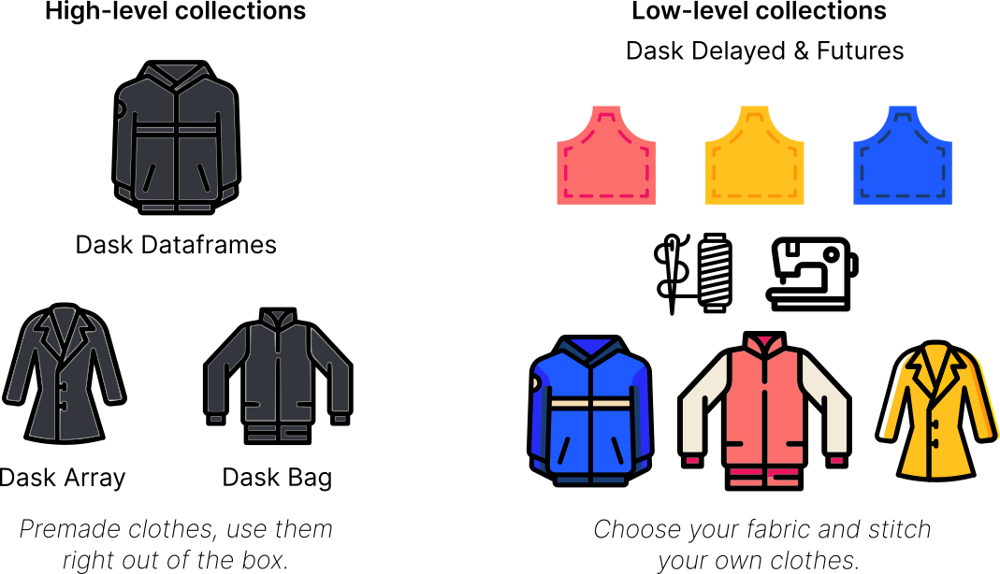

Big Data: Dask tutorial
Lviv University
Intro

- Dask is a parallel and distributed computing library that scales the existing Python and PyData ecosystem.
- Dask can scale up to your full laptop capacity and out to a cloud cluster.
Installation
An example Dask computation
Example
In the following lines of code, we’re reading the NYC taxi cab data from 2015 and finding the mean tip amount.
- Import
- Create client.
- Read data.
- Groupby and mean
What is Dask?
Many parts
There are many parts to the “Dask” the project:
- Collections/API also known as “core-library”.
- Distributed – to create clusters
- Integrations and broader ecosystem
Dask Collections
Overview
Dask provides multi-core and distributed+parallel execution on larger-than-memory datasets

- High-level collections: Dask provides high-level Array, Bag, and DataFrame collections that mimic NumPy, lists, and pandas but can operate in parallel on datasets that don’t fit into memory.
- Low-level collections: Dask also provides low-level Delayed and Futures collections that give you finer control to build custom parallel and distributed computations.
Dask Cluster
Cluster
Most of the times when you are using Dask, you will be using a distributed scheduler, which exists in the context of a Dask cluster. The Dask cluster is structured as:
Dask Ecosystem
Libraries
In addition to the core Dask library and its distributed scheduler, the Dask ecosystem connects several additional initiatives, including:
- Dask-ML (parallel scikit-learn-style API)
- Dask-image
- Dask-cuDF
- Dask-sql
- Dask-snowflake
- Dask-mongo
- Dask-bigquery
Dask Ecosystem
Community ibraries
Community libraries that have built-in dask integrations like:
- Xarray
- XGBoost
- Prefect
- Airflow
Dask deployment libraries
- Dask-kubernetes
- Dask-YARN
- Dask-gateway
- Dask-cloudprovider
- jobqueue
Dask Use Cases
Use cases
Dask is used in multiple fields such as:
- Geospatial
- Finance
- Astrophysics
- Microbiology
- Environmental science
Check out the Dask use cases page that provides a number of sample workflows.
Dataframe
Dask DataFrame - parallelized pandas
Description
Looks and feels like the pandas API, but for parallel and distributed workflows.
At its core, the
dask.dataframemodule implements a “blocked parallel”DataFrameobject that looks and feels like the pandas API, but for parallel and distributed workflows.One Dask
DataFrameis comprised of many in-memory pandasDataFrames separated along the index.One operation on a Dask
DataFrametriggers many pandas operations on the constituent pandasDataFrames in a way that is mindful of potential parallelism and memory constraints.
Dask DataFrame

Dask DataFrame
Related Documentation
DataFrame
When to use dask.dataframe
pandas is great for tabular datasets that fit in memory. A general rule of thumb for pandas is:
“Have 5 to 10 times as much RAM as the size of your dataset”
~ Wes McKinney (2017) in 10 things I hate about pandas
Here “size of dataset” means dataset size on the disk.
Dask becomes useful when the datasets exceed the above rule.
In this notebook, you will be working with the New York City Airline data. This dataset is only ~200MB, so that you can download it in a reasonable time, but dask.dataframe will scale to datasets much larger than memory.
DataFrame
DataFrame
Dask Diagnostic Dashboard
Dask Distributed provides a useful Dashboard to visualize the state of your cluster and computations.
Click on the dashboard link displayed in the Client details above: http://127.0.0.1:8787/status. It will open a new browser tab with the Dashboard.
DataFrame
Reading and working with datasets
Note
The term “Dask DataFrame” is slightly overloaded. Depending on the context, it can refer to the module or the DataFrame object. To avoid confusion:
dask.dataframe(note the all lowercase) refers to the API, andDataFrame(note the CamelCase) refers to the object.
DataFrame
DataFrame
What happened?
Dask has not loaded the data yet, it has:
- investigated the input path and found that there are ten matching files
- intelligently created a set of jobs for each chunk – one per original CSV file in this case
Note
Notice that the representation of the DataFrame object contains no data - Dask has just done enough to read the start of the first file, and infer the column names and dtypes.
DataFrame
Lazy Evaluation
Most Dask Collections, including Dask DataFrame are evaluated lazily, which means Dask constructs the logic (called task graph) of your computation immediately but “evaluates” them only when necessary.
You can view this task graph using .visualize().
Note that we need to call .compute() to trigger actual computations.
DataFrame
Lazy Evaluation
Some functions like len and head also trigger a computation. Specifically, calling len will:
- load actual data, (that is, load each file into a pandas DataFrame)
- then apply the corresponding functions to each pandas DataFrame (also known as a partition)
- combine the subtotals to give you the final grand total
DataFrame
Lazy Evaluation
You can view the start and end of the data as you would in pandas:
ddf.tail()
# ValueError: Mismatched dtypes found in `pd.read_csv`/`pd.read_table`.
# +----------------+---------+----------+
# | Column | Found | Expected |
# +----------------+---------+----------+
# | CRSElapsedTime | float64 | int64 |
# | TailNum | object | float64 |
# +----------------+---------+----------+
# The following columns also raised exceptions on conversion:
# - TailNum
# ValueError("could not convert string to float: 'N54711'")
# Usually this is due to dask's dtype inference failing, and
# *may* be fixed by specifying dtypes manually by adding:
# dtype={'CRSElapsedTime': 'float64',
# 'TailNum': 'object'}
# to the call to `read_csv`/`read_table`.DataFrame
Handling conflicting types
Unlike pandas.read_csv which reads in the entire file before inferring datatypes, dask.dataframe.read_csv only reads in a sample from the beginning of the file (or first file if using a glob). These inferred datatypes are then enforced when reading all partitions.
In this case, the datatypes inferred in the sample are incorrect. The first n rows have no value for CRSElapsedTime (which pandas infers as a float), and later on turn out to be strings (object dtype). When this happens you have a few options:
- Specify dtypes directly using the
dtypekeyword. This is the recommended solution, as it’s the least error prone (better to be explicit than implicit) and also the most performant. - Increase the size of the
samplekeyword (in bytes) - Use
assume_missingto makedaskassume that columns inferred to beint(which don’t allow missing values) are actuallyfloats(which do allow missing values). In our particular case this doesn’t apply.
DataFrame
Handling conflicting types
DataFrame
Reading from remote storage
If you’re thinking about distributed computing, your data is probably stored remotely on services (like Amazon’s S3 or Google’s cloud storage) and is in a friendlier format (like Parquet). Dask can read data in various formats directly from these remote locations lazily and in parallel.
Here’s how you can read the NYC taxi cab data from Amazon S3:
You can also leverage Parquet-specific optimizations like column selection and metadata handling, learn more in the Dask documentation on working with Parquet files.
DataFrame
Computations with dask.dataframe
Let’s compute the maximum of the flight delay.
With just pandas, we would loop over each file to find the individual maximums, then find the final maximum over all the individual maximums.
DataFrame
DataFrame
Computations with dask.dataframe
Dask will delete intermediate results (like the full pandas DataFrame for each file) as soon as possible. This means you can handle datasets that are larger than memory but, repeated computations will have to load all of the data in each time. (Run the code above again, is it faster or slower than you would expect?)
You can view the underlying task graph using .visualize():
DataFrame
Exercises
- How many rows are in our dataset?
- In total, how many non-canceled flights were taken?
Hint: use boolean indexing.
DataFrame
Exercises
- In total, how many non-canceled flights were taken from each airport?
Hint: use groupby.
- What was the average departure delay from each airport?
DataFrame
DataFrame
Sharing Intermediate Results
When computing all of the above, we sometimes did the same operation more than once. For most operations, dask.dataframe stores the arguments, allowing duplicate computations to be shared and only computed once.
For example, let’s compute the mean and standard deviation for departure delay of all non-canceled flights.
If you compute them with two calls to compute, there is no sharing of intermediate computations.
DataFrame
dask.compute
But let’s try by passing both to a single compute call.
Using dask.compute takes roughly 1/2 the time. This is because the task graphs for both results are merged when calling dask.compute, allowing shared operations to only be done once instead of twice. In particular, using dask.compute only does the following once:
- the calls to
read_csv - the filter (
df[~df.Cancelled]) - some of the necessary reductions (
sum,count)
DataFrame
Visualization
DataFrame
.persist()
While using a distributed scheduler (you will learn more about schedulers in the upcoming notebooks), you can keep some data that you want to use often in the distributed memory.
persist generates “Futures” (more on this later as well) and stores them in the same structure as your output. You can use persist with any data or computation that fits in memory.
If you want to analyze data only for non-canceled flights departing from JFK airport, you can either have two compute calls like in the previous section:
DataFrame
.persist()
Or, consider persisting that subset of data in memory.
See the “Graph” dashboard plot, the red squares indicate persisted data stored as Futures in memory. You will also notice an increase in Worker Memory (another dashboard plot) consumption.
Analyses on this persisted data is faster because we are not repeating the loading and selecting (non-canceled, JFK departure) operations.
DataFrame
Custom code with Dask DataFrame
dask.dataframe only covers a small but well-used portion of the pandas API.
This limitation is for two reasons:
- The Pandas API is huge
- Some operations are genuinely hard to do in parallel, e.g, sorting.
Additionally, some important operations like set_index work, but are slower than in pandas because they include substantial shuffling of data, and may write out to disk.
DataFrame
Solutions
In case it’s a custom function or tricky to implement, dask.dataframe provides a few methods to make applying custom functions to Dask DataFrames easier:
map_partitions: to run a function on each partition (each pandas DataFrame) of the Dask DataFramemap_overlap: to run a function on each partition (each pandas DataFrame) of the Dask DataFrame, with some rows shared between neighboring partitionsreduction: for custom row-wise reduction operations.
DataFrame
map_partitions
Let’s take a quick look at the map_partitions() function:
The “Distance” column in ddf is currently in miles. Let’s say we want to convert the units to kilometers and we have a general helper function as shown below. In this case, we can use map_partitions to apply this function across each of the internal pandas DataFrames in parallel.
DataFrame
What is meta?
Since Dask operates lazily, it doesn’t always have enough information to infer the output structure (which includes datatypes) of certain operations.
meta is a suggestion to Dask about the output of your computation. Importantly, meta never infers with the output structure. Dask uses this meta until it can determine the actual output structure.
Even though there are many ways to define meta, we suggest using a small pandas Series or DataFrame that matches the structure of your final output.
Close you local Dask Cluster
Dask Arrays
Dask Arrays
Dask Arrays - parallelized numpy
Parallel, larger-than-memory, n-dimensional array using blocked algorithms.
- Parallel: Uses all of the cores on your computer
- Larger-than-memory: Lets you work on datasets that are larger than your available memory by breaking up your array into many small pieces, operating on those pieces in an order that minimizes the memory footprint of your computation, and effectively streaming data from disk.
- Blocked Algorithms: Perform large computations by performing many smaller computations.
Dask Arrays
Dask Arrays - parallelized numpy

Dask Arrays
Related Documentation
Dask Arrays
Dask Arrays
Dask Arrays
Dask Arrays
Blocked Algorithms in a nutshell
We know that we can use sum() to compute the sum of the elements of our array, but to show what a blocksized operation would look like, let’s do:
Now notice that each sum in the computation above is completely independent so they could be done in parallel. To do this with Dask array, we need to define our “slices”, we do this by defining the amount of elements we want per block using the variable chunks.
Dask Arrays
Dask Arrays
Dask Arrays
Performance comparison
Let’s try a more interesting example. We will create a 20_000 x 20_000 array with normally distributed values, and take the mean along one of its axis.
Numpy version
Dask array version
Dask Arrays
Dask Arrays
Dask Arrays
Choosing good chunk sizes
We can think of Dask arrays as a big structure composed by chunks of a smaller size, where these chunks are typically an a single numpy array, and they are all arranged to form a larger Dask array.
If you have a Dask array and want to know more information about chunks and their size, you can use the chunksize and chunks attributes to access this information. If you are in a jupyter notebook you can also visualize the Dask array via its HTML representation.
Dask Arrays
Choosing good chunk sizes
Notice that when we created the Dask array, we did not specify the chunks. Dask has set by default chunks='auto' which accommodates ideal chunk sizes. To learn more on how auto-chunking works you can go to this documentation here.
darr.chunksizeshows the largest chunk size.- But if your array have irregular chunks,
darr.chunkswill show you the explicit sizes of all the chunks along all the dimensions of your dask array.
Dask Arrays
Dask Arrays
Exercise
- What does -1 do when specify as the chunk on a certain axis?
Dask Arrays
Too small is a problem
If your chunks are too small, the amount of actual work done by every task is very tiny, and the overhead of coordinating all these tasks results in a very inefficient process.
In general, the dask scheduler takes approximately one millisecond to coordinate a single task. That means we want the computation time to be comparatively large, i.e in the order of seconds.
Dask Arrays
Too big is a problem
If your chunks are too big, this is also a problem because you will likely run out of memory.
You will start seeing in the dashboard that data is being spill to disk and this will lead to performance decrements.
If we load to much data into memory, Dask workers will start to spill data to disk to avoid crashing.
To watch out for this you can look at the worker memory plot on the dashboard.
Orange bars are a warning you are close to the limit, and gray means data is being spilled to disk.
Dask Arrays
Rules of thumb
- Users have reported that chunk sizes smaller than 1MB tend to be bad. In general, a chunk size between 100MB and 1GB is good, while going over 1 or 2GB means you have a really big dataset and/or a lot of memory available per worker.
- Upper bound: Avoid very large task graphs. More than 10,000 or 100,000 chunks may start to perform poorly.
- Lower bound: To get the advantage of parallelization, you need the number of chunks to at least equal the number of worker cores available (or better, the number of worker cores times 2). Otherwise, some workers will stay idle.
- The time taken to compute each task should be much larger than the time needed to schedule the task. The Dask scheduler takes roughly 1 millisecond to coordinate a single task, so a good task computation time would be in the order of seconds (not milliseconds).
- Chunks should be aligned with array storage on disk. Modern NDArray storage formats (HDF5, NetCDF, TIFF, Zarr) allow arrays to be stored in chunks so that the blocks of data can be pulled efficiently. However, data stores often chunk more finely than is ideal for Dask array, so it is common to choose a chunking that is a multiple of your storage chunk size, otherwise you might incur high overhead. For example, if you are loading data that is chunked in blocks of (100, 100), the you might might choose a chunking strategy more like (1000, 2000) that is larger but still divisible by (100, 100).
For more more advice on chunking see https://docs.dask.org/en/stable/array-chunks.html
Dask Arrays
Example of chunked data with Zarr
Zarr is a format for the storage of chunked, compressed, N-dimensional arrays. Zarr provides classes and functions for working with N-dimensional arrays that behave like NumPy arrays (Dask array behave like Numpy arrays) but whose data is divided into chunks and each chunk is compressed. If you are already familiar with HDF5 then Zarr arrays provide similar functionality, but with some additional flexibility.
For extra material check the Zarr tutorial
Let’s read an array from zarr:
Dask Arrays
Example of chunked data with Zarr
Notice that the array is already chunked, and we didn’t specify anything when loading it. Now notice that the chunks have a nice chunk size, let’s compute the mean and see how long it takes to run
Let’s load a separate example where the chunksize is much smaller, and see what happen
Dask Arrays
Dask Arrays
Xarray
In some applications we have multidimensional data, and sometimes working with all this dimensions can be confusing. Xarray is an open source project and Python package that makes working with labeled multi-dimensional arrays easier.
Let’s learn how to use xarray and Dask together:
Dask Arrays
Standard Xarray Operations
Let’s grab the air variable and do some operations. Operations using xarray objects are identical, regardless if the underlying data is stored as a Dask array or a NumPy array.
Call .compute() or .load() when you want your result as a xarray.DataArray with data stored as NumPy arrays.
Dask Arrays
Dask Arrays
Learn More
Both xarray and zarr have their own tutorials that go into greater depth:
Dask Arrays
Useful Links
- Reference
- Ask for help
dasktag on Stack Overflow, for usage questions- github issues for bug reports and feature requests
- discourse forum for general, non-bug, questions and discussion
- Attend a live tutorial